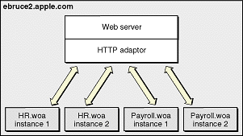
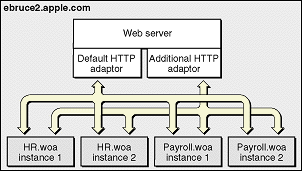
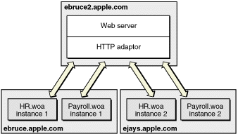

| PATH |

The HTTP adaptor forwards requests from an HTTP server to application instances and returns responses from instances back to the server. You may need to have more than one instance of a given application to support a large number of concurrent users. Figure 4-1 illustrates a simple site, implemented with one computer. It serves two applications, with two instances for each application.
Figure 4-1 Deployment on one computer, using one adaptor
Although the WebObjects installation provides several HTTP adaptors, only one is active by default (see "Default Adaptor Installation" for details). However, an application instance can communicate with an adaptor other than the active adaptor.
Figure 4-2 depicts an application site running on one computer, using two adaptors.
Figure 4-2 Deployment on one computer using two adaptors
Most sites require multiple computers to ensure that an instance of a particular application is always available. In this kind of deployment, usually one computer runs the HTTP server and the HTTP adaptor, while one or more additional computers serve as application hosts. Figure 4-3 illustrates an application site using three computers, one running the HTTP server and the adaptor, and the other two running application instances.
Figure 4-3 Deployment using three computers using one adaptor
The HTTP adaptor needs to periodically determine your site's state—which application instances are running. There are two ways in which the adaptor can obtain this information:
You configure your site using Monitor, a Web-browser–based tool.